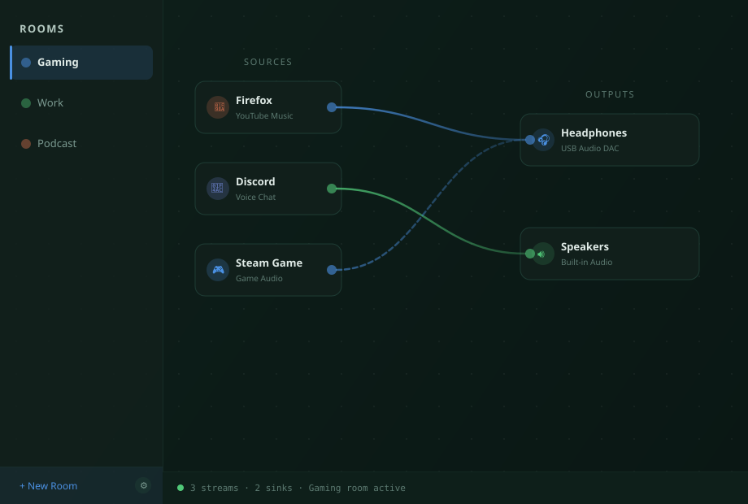
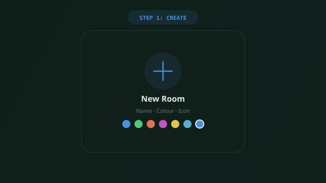
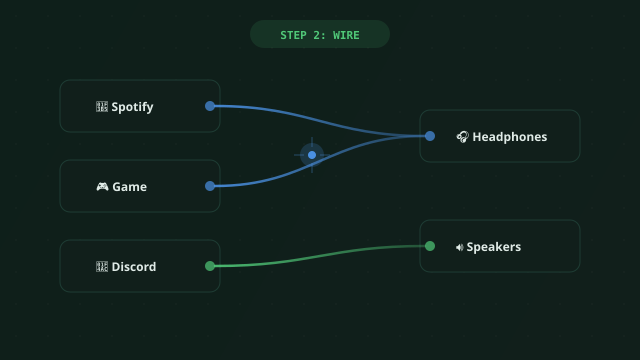
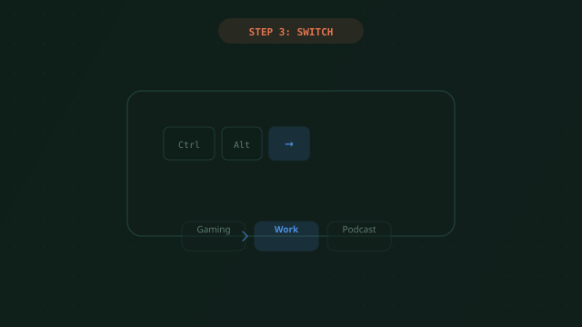
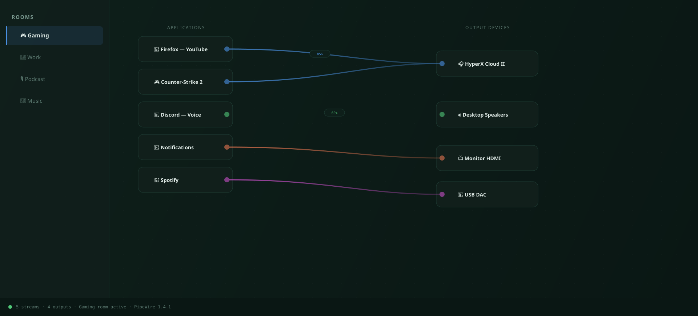
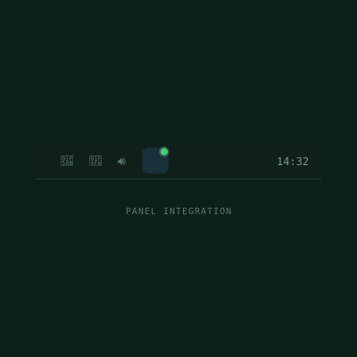
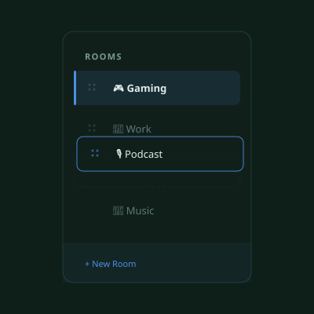
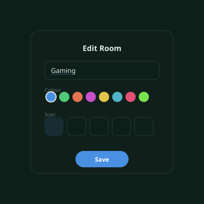
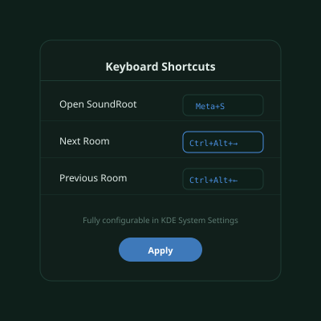

KDE Plasma 6 · PipeWire · Wayland · v0.8.0-beta
Build named audio rooms, drag-wire apps to any speaker combination, and switch your whole setup with a keyboard shortcut — all from a panel widget.

What it does
From a 2-app setup to complex multi-output rigs — SoundRoot handles it from the panel.
Named presets — Gaming, Work, Podcast, Music — that remember every route and restore them instantly when activated.
Drag from any app to any output device. Colour-coded wires show which streams share the same destination at a glance.
Send one app to headphones and speakers at the same time. Or isolate apps each to their own dedicated device.
Jump to next/previous room systemwide without touching the panel. Fully configurable in KDE Keyboard Shortcuts.
Grab the grip handle and drag rooms into whatever order suits your workflow. Order persists across sessions.
Dial exact output levels per route — separate from system master volume. Never be surprised by a loud tab again.
In practice

Hit New Room, pick a name, colour, and icon. Give it a personality that matches your use case.

Drag a wire from any running app to any sound device. Multi-output combines automatically via PipeWire.

Activate the room — all routes apply instantly. Use Ctrl+Alt+→ to cycle mid-game without touching the mouse.
Screenshots





Use cases
🎮 Gaming
Create a Gaming room that wires your game to your headphones and Discord to the speakers — activate it once, forget about it.
📺 Streaming
Send OBS and browser tabs to your stream monitor while keeping alert sounds on a different device. Switch with one keystroke.
💼 Work from Home
In meetings everything goes to a headset. In focus mode, music to speakers, notifications silenced. Switch in one key.
🎧 Music Production
Multi-output a single DAW stream to studio monitors and reference earbuds simultaneously — or switch profiles for client playback.
Free & open source
Install SoundRoot from the KDE Store or build from source. Works today on KDE Plasma 6 with PipeWire.